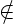
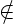
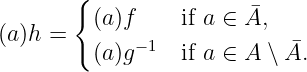
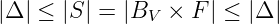
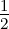

For a better reading experience, consider viewing the
PDF.
Is (ℝ, +) group isomorphic to (ℝ2, +)?
Ifan Howells-Baines
June 2024
Introduction
In this short document we will show how (ℝ, +) and (ℝ2, +) are isomorphic as groups.
While researching this problem I found that not many places online have the proof in a
rigorous enough way for my liking. Here we will give the proof in its entirety. The only
prerequesites are elementary ideas on linear algebra, cardinality, and cardinal
multiplication.
The Proof
Theorem. As additive groups, ℝ and ℝ2 are isomorphic.
To prove this, we will show that ℝ and ℝ2 are isomorphic as ℚ-vector spaces, which must
mean that they’re isomorphic as additive groups. We need two preliminary results to
continue.
Lemma 1 (Schrödinger-Bernstein). Let A and B be sets. If there exists injective
functions f : A → B and g : B → A, then there exists a bijective function h : A → B.
Proof. First, construct sequences {An}n∈ℕ and {Bn}n∈ℕ such that A0 = A, B0 = B,
and for n > 0, Bn+1 = (An)f and An+1 = A ∖ (B ∖ Bn+1)g.
We will show that for all n ∈ ℕ that Bn+1 ⊆ Bn. For n = 0, B1 = (A)f ⊆ B = B0.
Assume that this inclusion is true for some n = k. Then Bk+1 = (Ak)f =
(A∖ (B ∖Bk)g)f. By hypothesis, Bk+1 ⊆ Bk, so (B ∖Bk+1)g ⊇ (B ∖Bk)g ⇒ Ak+1 =
A ∖ (B ∖ Bk+1)g ⊆ A ∖ (B ∖ Bk)g = Ak ⇒ (Ak+1)f ⊆ (Ak)f ⇒ Bk+2 ⊆ Bk+1. By
induction, {Bn}
Let Ā = ⋂
n∈ℕAn and B = ⋂
n∈ℕBn. We will show that f|Ā is a bijection between
Ā and B and that g|
Let a ∈Ā. This means for all n ∈ ℕ, a ∈ An and hence (a)f ∈ Bn+1 ⇒ (a)f ∈B.
Since a ∈Ā was arbitrary, we’ve shown that (Ā)f ⊆B. Conversely, let b ∈B. For all
n ∈ ℕ, b ∈ Bn which means for each n there exists an an ∈ An such that (an)f = b.
By injectivity, all of these an’s are equal. Since b was arbitrary, we’ve shown that for
any b ∈B there exists an a ∈Ā such that (a)f = b and therefore B ⊆ (Ā)f.
Now, let b ∈ B ∖B. This means there exists a n ∈ ℕ such that b Bn+1, so
as An+1 = A ∖ (B ∖ Bn+1)g, (b)g
Bn+1, so
as An+1 = A ∖ (B ∖ Bn+1)g, (b)g An+1, and so (b)g ∈ A ∖Ā. As b was arbitrary,
(B ∖B)g ⊆ A ∖Ā. Conversely, let a ∈ A ∖Ā. This means there exists a n ∈ ℕ such
that aAn+1, so a ∈ (B ∖ Bn+1)g, and hence there exists a b ∈ B ∖ Bn+1 such that
(b)g = a which will be unique as g is injective. We’ve shown that for any a ∈ A ∖Ā
there exists a b ∈ B ∖B such that (b)g = a, therefore A ∖Ā ⊆ (B ∖B)g.
An+1, and so (b)g ∈ A ∖Ā. As b was arbitrary,
(B ∖B)g ⊆ A ∖Ā. Conversely, let a ∈ A ∖Ā. This means there exists a n ∈ ℕ such
that aAn+1, so a ∈ (B ∖ Bn+1)g, and hence there exists a b ∈ B ∖ Bn+1 such that
(b)g = a which will be unique as g is injective. We’ve shown that for any a ∈ A ∖Ā
there exists a b ∈ B ∖B such that (b)g = a, therefore A ∖Ā ⊆ (B ∖B)g.
Now the function h : A → B defined by

is a bijection. □
Lemma 2. Let X be an infinite set and let S be the set of all finite subsets of X.
Then |X| = |S|.
Proof. First, |X| = |{{x}|x ∈ X}|≤|S| since singletons are finite subsets of X. Let
Sn = {s ∈ S||s| = n}. Thinking of ordered pairs, we know that |X|n = |X|, and since any
element in Sn can be ordered n! different ways to create an ordered pair of length n, we
get |Sn|≤ n!|X|n. So
| |X|≤|S| = | ∑
n∈ℕ|Sn| | (1)
|
| ≤ | ∑
n∈ℕ|X| | (2)
|
| = | |ℕ||X| = |X| (cardinal multiplication). | (3) |
Therefore |X| = |S|. □
The next result will give us a direction to pursue for the rest of the proof.
Lemma 3. Let V and W be F-vector spaces for some field F. If dimV = dimW,
then (V, +)(W, +).
Proof. Let BV = {ei}i∈I and BW = {fj}j∈J be bases for V and W respectively for
some index sets I and J. Since dimV = dimW, there exists a bijection φ : BV → BW .
We can extend φ to φ : V → W like so: given v = ∑
i∈Iaiei (ai ∈ F), we map this
to vφ = ∑
i∈Iai(ei)φ. We will show that this function is a linear isomorphism.
First, let w = ∑
j∈Jajfj ∈ W, then the vector ∑
j∈Jaj(fj)φ−1 ∈ V maps to w.
So φ is a surjection.
Next, suppose v1,v2 ∈ V with v1 = ∑
i∈Iaiei and v2 = ∑
i∈Ibiei. If v1φ = v2φ,
then ∑
i∈I(ai − bi)(ei)φ = 0 and hence, since BV is linearly independent, ai = bi for
all i ∈ I. This proves that φ is injective. We’ve shown that φ is a bijection, and since
it’s linear by construction, is a linear isomorphism. Therefore (V, +)(W, +). □
So, to show that (ℝ, +) and (ℝ2, +) are isomorphic we need to show that
dimℝ = dimℝ2 with respect to some field. This next result hints that we should use a field
that will make ℝ and ℝ2 infinite dimensional.
Lemma 4. If V is an infinite dimensional F-vector space for some field F with
basis BV = {ei}i∈I, then |V | = max(|BV |,|F|).
Proof. Let v = ∑
i∈Iaiei ∈ V and define δv : Bv → F by eiδv = ai. Let Δ be the set
of all possible functions from BV to F where only finitely many images of elements
of BV are nonzero. Let σ1 : V → Δ be defined by vσ1 = δv. This is an injection since
every element of a vector space can be represented uniquely as a linear combination
of its basis. Let σ2 : Δ → V be defined by πσ2 = ∑
e∈BV e(eπ), which is an injection
for the same reason. By Lemma 1, |V | = |Δ|.
We now want to count the number of functions in Δ. We can represent a function
δ ∈ Δ by a finite subset H of BV × F: (v,a) ∈ H if and only if vδ = a ∈ F ∖{0}.
Using this, we can get the cardinality of Δ. First, Δ has cardinality at least
|{{(v,a)}|v ∈ BV ,a ∈ F}| = |BV × F|, since each singleton {(v,a)} corresponds to
the vector av. If S is the set of all finite subsets of BV × F, then using Lemma 2
we get that |BV × F| = |S|. However, we’ve shown that every function in Δ can be
represented by a finite subset of BV × F. Hence

and therefore |Δ| = |BV × F| = |BV ||F| = max(|BV |,|F|) by the definition of
cardinal multiplication.
□
This tells us that we want to find a field F such that ℝ and ℝ2 as F-vector spaces have
bases which have a larger cardinality than F. We’ll then use Lemma 1 to show that that
they have equal cardinality, and hence by the above, dimension. The following result tells
us what choice for F we should make.
Lemma 5. Let V be a finite dimensional ℚ-vector. Then V is countable.
Proof. Any vector in V can be represented uniquely by an ordered pair from ℚdimV .
Since the Cartesian product of countable sets is countable, V must be countable. □
In particular, what the above lemma tells us is that ℝ and ℝ2 over ℚ are infinite
dimensional. We only need one more result to complete the puzzle.
Proof. We will do this using Lemma 1. First, note that the result is equivalent to
showing there exists a bijection h : (0, 1) → (0, 1)2 since h′ : (0, 1) → ℝ defined by
xh′ = tan π(x −) is a bijection. Let f : (0, 1) → (0, 1)2 be defined by xf = (x,x).
This is an injection. For the reverse injection, the story is a bit more intricate.
If (0.a1a2a3…, 0.b1b2b3…) ∈ (0, 1)2, then a natural choice for its image in (0, 1)
would be 0.a1b1a2b2a3b3…, but binary representation of numbers are not unique; take
for example 0.5 and 0.4999…. However, since we are looking to construct an injection
and not a bijection, we can get around this problem. Let g : (0, 1)2 → (0, 1) be
defined by (0.a1a2a3…, 0.b1b2b3…)g = 0.a1b1a2b2a3b3…, and if a number has more than
one binary representation, pick one arbitrarily to use. This is an injection.
Hence by Lemma 1, there is a bijection between (0, 1) and (0, 1)2 and therefore
a bijection between ℝ and ℝ2. □
We now have everything we need to prove our objective. All we need to do is put the
pieces together.
Theorem. As additive groups, ℝ and ℝ2 are isomorphic.
Proof. Let Bℝ and Bℝ2 be bases for ℝ and ℝ2 over ℚ, respectively. By Lemma 5, we
know that |Bℝ| and |Bℝ2| are infinite. Since |ℚ| = |ℕ|, the smallest cardinal, we know
that |Bℝ|≥|ℚ| and |Bℝ2|≥|ℚ|. Hence by Lemma 4, |ℝ| = max(|Bℝ|,|ℚ|) = |Bℝ|,
and similarily, |ℝ2| = |B
ℝ2|. Using Lemma 6, |Bℝ| = |Bℝ2|, and finally by Lemma 3,
(ℝ, +)(ℝ2, +). □